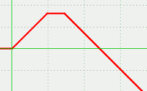

Descripción
Selecciona un valor a partir de una sentencia if-elsif*-else.
Nota: los valores y condiciones posteriores al caso seleccionado no se evaluarán
Cadena de entrada
elsif
Cadena de salida
elsif
Uso
elsif(<cond_if>,<caso_if>[,<cond_else-if>,<caso_else-if>]*[,<caso_else>])
| Parámetros | |||
|---|---|---|---|
| # | Parámetro | Descripción | Valor por defecto |
| 1 | cond_if | Condición para seleccionar el primer valor(V) o pasar al siguiente caso(F) | |
| 2 | caso_if | Valor devuelto si la condición if es verdadera | |
| 1+2i | cond_else-if{i} | Condición para seleccionar el caso siguiente | ∅ |
| 2(i+1) | caso_else-if{i} | Valor devuelto si la condición anterior es verdadera | ∅ |
| n | caso_else | Valor devuelto si las demás condiciones fallan. Si estas condiciones fallan y no se define <caso_else>, se lanzará una excepción |
∅ |
| i:[1...nº else-if], n:nº params | |||
Ejemplos
sucesion([x,elsif(x<0,0,x<=20,x,x<30,20,50-x)],x,-20,40,5) (sentencia if ,sentencia else-if , sentencia else )
VectorEvaluado: | -20 0 | | -15 0 | | -10 0 | | -5 0 | | 0 0 | | 5 5 | | 10 10 | | 15 15 | | 20 20 | | 25 20 | | 30 20 | | 35 15 | | 40 10 |
elsif(x<0,0,x<=20,x,x<30,20,50-x)
(Gráfica JGE): 
elsif(primo(7),pi) (forma más corta de elsif, sin caso else ni else-if)
RealDoble: 3.141592653589793
elsif(primo(8),pi)
FuncionException: <<<FuncionException>>> en funcion "elsif": Caso Else no contemplado --> elsif(Vector:[primo(8),3.141592653589793])
Véase también…